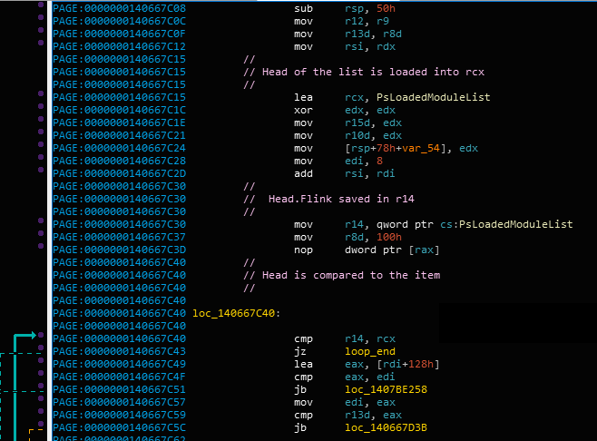
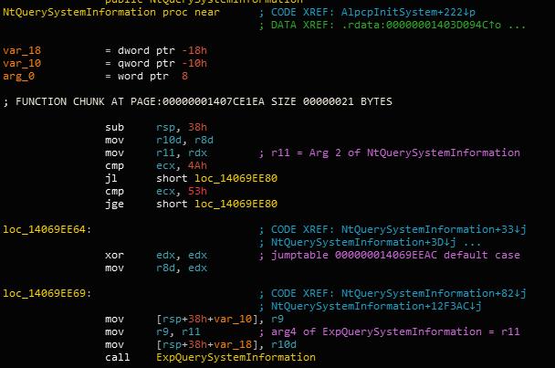
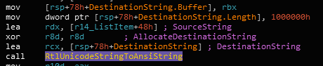

AuxKlibQueryModuleInformation
In this article I’m going over the solution to reverse engineering AuxKlibQueryModuleInformation. This exercise is one of the easiest exercises in the book.
Exercise:
In the walk-through, we mentioned that a driver can enumerate all loaded modules with the documented API AuxKlibQueryModuleInformation. Does this API guarantee that the returned module list is always up-to-date? Explain your answer. Next, reverse engineer AuxKlibQueryModuleInformation on Windows 8 and explain how it works. How does it handle the case when multiple threads are requesting access to the loaded module list? Note: The internal function handling this request (and others) is fairly large, so you will need some patience. Alternatively, you can use a debugger to help you trace the interesting code.
Ok, So where can we begin? To solve this exercise, let’s divide it to the tasks we need to perform:
- Does this API (AuxKlibQueryModuleInformation) guarantee that the returned module list is always up-to-date?
- Reverse engineer AuxKlibQueryModuleInformation on Windows 8 and explain how it works.
- How does it handle the case when multiple threads are requesting access to the loaded module list?
Ok, to solve this exercise will use IDA to statically reverse engineer the functions. In this exercise, we will not use the decompiler to practice reading assembly code. Using a decompiler can save a lot of time, but learning how to navigate in the disassembly window is valuable for reverse engineering.
Let’s understand what is “AuxKlibQueryModuleInformation”:
MSDN: The AuxKlibQueryModuleInformation routine retrieves information about the image modules that the operating system has loaded.
NTSTATUS AuxKlibQueryModuleInformation(
PULONG BufferSize,
ULONG ElementSize,
PVOID QueryInfo
);Ok, sounds like it should return a list of images. It’s not so clear from the description if the images are the images that are loaded into memory or only those that are loaded into the kernel, we’ll check this later.
So, to answer the first question our first subtask is to find where ‘AuxKlibQueryModuleInformation’ is implemented.
Searching ntoskrnl.exe we did not find the function. This means it must be declared somewhere else. Looking at the documentation we see that this function is declared in aux_klib.h and the required library is aux_klib.lib.
LIB files are static libraries. A static library is simply an archive file containing object files that can be used by the linker to add code to a binary. Read more about it in my other blog-post. (side note: This is why I wrote this post;))
Ok, so now we know this function is defined in aux_klib.lib.
We can use the “dumpbin.exe” tool to disassemble the lib file. We can also compile a driver that uses the AuxKlibQueryModuleInformation and then look at the compiled binary to see what is the result. After a quick inspection using dumpbin.exe we can see the following function call:
AuxKlibQueryModuleInformation:
.....
.....
lea r9,[rsp+20h] ; ReturnLength
mov r8d,esi ; SystemInformationLength
mov rdx,rbx ; SystemInformation
mov ecx,0Bh ; SystemInformationClass
call qword ptr [__imp_ZwQuerySystemInformation] ; <-------
.....
.....Looks like AuxKlibQueryModuleInformation uses ZwQuerySystemInformation to query the module list. The definition of the function is:
NTSTATUS WINAPI ZwQuerySystemInformation(
_In_ SYSTEM_INFORMATION_CLASS SystemInformationClass,
_Inout_ PVOID SystemInformation,
_In_ ULONG SystemInformationLength,
_Out_opt_ PULONG ReturnLength
);The SystemInformationClass is the type of information we would like to query. As you can see in the disassembly, the class equals to 0xb - but what is 0xb?
Typically I would search for the SYSTEM_INFORMATION_CLASS enum definition (people on the internet continue documenting undocumented classes, for example the process hacker project has good header files) but we will look at the actual implementation of ZwQuerySystemInformation to find out the SystemInformationClass, to learn how this can be done.
The implementation of this function resides in ntoskrnl.exe. This is the implementation:

This function is a Zw function. Read more about the Zw functions here
The Zw functions call the Nt functions and change the PreviousMode to KernelMode. So jmp KiServiceInternal calls
NtQuerySystemInformation under the hood. The same names exist in ntdll but ntoskrnl.exe contains the actual implementation of the
system calls. If you look at ntdll you will see the same ID is used before executing “syscall”.
This is because the kernel Zw functions and the user mode Nt functions both go through the SSDT to extract the system call handler pointer. In this case the same function (NtQuerySystemInformation) will be executed in kernel mode.
Ok, so let’s repeat our current task: We need to find where SystemInformationClass 0xb leads to. Examining NtQuerySystemInformation we see all the ways out go through ExpQuerySystemInformation or return an error status. The SystemInformationClass is passed in rcx (this is the register that contains the first parameter..). Note that I did not start reading the disassembly from top to bottom, All I want to know is what happens when SystemInformationClass = 0xb.
Tracing rcx we see it does not change before the call to ExpQuerySystemInformation. This means the first parameter to ExpQuerySystemInformation is the SystemInformationClass parameter.
Looking at ExpQuerySystemInformation can start tracing the value in rcx. In IDA we can highlight the rcx register and see where it is used.
You can see the rcx value is moved to rdi and then it’s overridden - now we need to look at rdi.
This is the next usage of the rdi register:
We know 0xb is less then 0x49, So let’s follow loc_14069F19C:
This is an example of a switch statement. This is a table that contains the handlers for the different cases in the switch statement. IDA has already found the cases for you! To find the case easily you can use “Search Text” (Alt-T) and search for the following text: “case 11”. So, after searching for this text we find the following:

Ok! So we found the actual code that queries the list of modules. From it’s name, we can understand that the PsLoadedModuleList list contains a list of the loaded modules.
Looking at the ExpQueryModuleInformation function we see the following graph:
We see a big loop in this function. Looking at the beginning of the function we see:
For now, we assume this function enumerates this list and returns the images from this list - we will verify this assumption when we’ll need to. Finally we finished our first task - find what is SystemInformationClass 0xb.
Let’s repeat the first question we need to answer:
- Does this API (AuxKlibQueryModuleInformation) guarantee that the returned module list is always up-to-date?
So, we need to understand if the returned value “is always up-to-date”. The general definition of “up-to-date” can have different meanings. But the general answer is: It’s not guaranteed the list is up to date after the call to AuxKlibQueryModuleInformation. Looks like the PsLoadedModuleList is protected by the ERESOURCE synchronization object (readers-writer lock) PsLoadedModuleResource. Before invoking ExpQueryModuleInformation we acquire the lock. But right after that we call ExReleaseResourceLite and the list can be updated again. We can assume the PsLoadedModuleList is changed only when the lock is acquired.
If AuxKlibQueryModuleInformation was designed to get an updated version of PsLoadedModuleList it would have let the caller acquire / release the lock by himself. In fact, the PsLoadedModuleResource is exported in ntoskrnl in windows 10:
Because the ERESOURCE lock can be acquired twice from the same thread, This means the caller can actually:
- Acquire the lock
- Call AuxKlibQueryModuleInformation
- Do fun stuff with the list (The list is also exported ;))
- Release the lock when the work is done
This will guarantee the list cannot be updated while the locked is held - This is of course under the assumption that PsLoadedModuleList is not updated without taking the lock. This approach is not good enough for actual usage because:
- Assuming things like that without actually checking is not valid - this can cause bugs in your product
- Even if we test our assumption and it is correct, Microsoft can change this behavior in any moment (all fair and square in the undocumented world) - For example Microsoft sometimes changes the type of locks (ERESOURCE to some other type of lock…)
- It’s not available in windows 7 / 8 - the list and lock aren’t exported (this can be a problem, depends on your case)
Just out of curiosity, Let’s use the windows import searcher tool to find which modules import these variables:
>python.exe windows_imports_searcher.py search -i index.json -f ntoskrnl.exe!PsLoadedModule*
Reading file index.json
c:\windows\system32\drivers\ntosext.sys Imports ntoskrnl.exe!PsLoadedModuleResource
c:\windows\system32\drivers\ntosext.sys Imports ntoskrnl.exe!PsLoadedModuleListOk, we see the only driver that imports this list is ntosext.sys. We may have missed other modules that import the loaded module list using MmGetSystemRoutineAddress. Also, there are components like debuggers that can make good use of this list. This list was exported in windows 10 probably because ntosext.sys was moved out of ntoskrnl.exe, we can verify this too but it’s a bit out of scope, I leave this as homework for the reader;)
Let’s procceed to our next task:
- Reverse engineer AuxKlibQueryModuleInformation and explain how it works.
Ok, we have to be careful with this task. “explain how it works” can be easily misinterpreted as “understand every small detail about the implementation of AuxKlibQueryModuleInformation” - this is not correct. Sometimes in reverse engineering we want to get the general picture of something - this “something” can be a complete program or a specific feature of a program. We have to be careful not to spend too much time reversing AuxKlibQueryModuleInformation because all that is needed here is to understand the big picture.
Ok, so we already have some parts of the picture from our analysis of the last task:
- AuxKlibQueryModuleInformation is defined inside the aux_klib.lib static library.
- It calls ZwQuerySystemInformation to trigger ExpQuerySystemInformation.
- ExpQuerySystemInformation acquires PsLoadedModuleResource and calls ExpQueryModuleInformation
- We can estimate that ExpQueryModuleInformation takes a snapshot of the list at that moment and saves it to the output buffer.
- The lock is released and the buffer is returned to the user
Ok, actually we can stop analyzing here because we have the big picture. But for the sake of the exercise and because we haven’t examined ExpQueryModuleInformation let’s verify it does what we think it does:)
As I have shown before, this function has a big loop. We can estimate this loop enumerates the entries in the PsLoadedModuleList, let’s verify:
We can see the following code before the loop:

Ok, looks like r14 is the loop variable and it’s compared to the head of the list. If it points to the head of the list, the loop ends. Let’s verify r14 is the loop variable:
Yes, looks like the estimation was right. To see generally what this loop does let’s look at the usage of r14 inside the loop body:
Looks like values from the ListItem structure (which represents a loaded module) are copied to some output structure pointed by rsi. Let’s verify rsi contains the output buffer for the caller by looking where rsi comes from:
Ok, the answer is: rsi = (SecondParam + 8). Let’s see where the second parameter (rdx) comes from:
(Inside ExpQuerySystemInformation)
And let’s trace rbx: We can use Alt-Up to see where is the first assignment of rbx:
Ok, so rbx contains the fourth parameter to ExpQuerySystemInformation. Let’s trace it the caller to see where it comes from:
(Inside NtQuerySystemInformation)

Ok, it’s the second parameter to NtQuerySystemInformation. Let’s see the prototype of this function:
__kernel_entry NTSTATUS NtQuerySystemInformation(
IN SYSTEM_INFORMATION_CLASS SystemInformationClass,
OUT PVOID SystemInformation,
IN ULONG SystemInformationLength,
OUT PULONG ReturnLength
);Yay! we were correct because the second parameter is SystemInformation - the output parameter for the caller.
Ok let’s see the last question:
- How does it handle the case when multiple threads are requesting access to the loaded module list?
We already know the answer to that! This is handled using a readers-writer lock. This type of lock allows readers to read the list together (it’s safe since they do not change the list) BUT in case a writer wants to edit the list, only the writer will have access to the list. Weirdly, The query function locks the list with the ExAcquireResourceExclusiveLite function which does not allow someone else to read the list. This is weird since this function is supposed to read and not write to the list. After a verification I did not find any write to the list inside ExpQueryModuleInformation so it simply looks like bad coding but idk, maybe I don’t undestand something.
Last but not least, we want to know if the function returns user mode DLLs or not. We can try figuring out what is inserted into PsLoadedModuleList statically, but let’s solve this problem using dynamic analysis. How can we solve this problem? We can write code that calls AuxKlibQueryModuleInformation and look at the return value, but there’s an easier way. Remember the body of the loop?

We can assume this is a conversion of the name of the image before it’s put in the target buffer. Let’s put a breakpoint at the call to RtlUnicodeStringToAnsiString and look at the source string. To make this work we have to trigger ZwQuerySystemInformation somehow, let’s just open process explorer and try to trigger this by clicking View->System Information.
kd> bp fffff80207203c57 "dS /c 100 rdx; g"
kd> g
ffffa78e`7e605f40 "\SystemRoot\system32\ntoskrnl.exe"
ffffa78e`7e606e90 "\SystemRoot\system32\hal.dll"
ffffa78e`7e606ef0 "\SystemRoot\system32\kdcom.dll"
ffffa78e`7e605f40 "\SystemRoot\system32\ntoskrnl.exe"
ffffa78e`7e606e90 "\SystemRoot\system32\hal.dll"
ffffa78e`7e606ef0 "\SystemRoot\system32\kdcom.dll"
ffffa78e`7e606f50 "\SystemRoot\system32\mcupdate_GenuineIntel.dll"
ffffa78e`7e607d60 "\SystemRoot\System32\drivers\msrpc.sys"
ffffa78e`7e607dd0 "\SystemRoot\System32\drivers\ksecdd.sys"
ffffa78e`7e607e40 "\SystemRoot\System32\drivers\werkernel.sys"
ffffa78e`7e607ec0 "\SystemRoot\System32\drivers\CLFS.SYS"
ffffa78e`7e607f30 "\SystemRoot\System32\drivers\tm.sys"
ffffa78e`7e608010 "\SystemRoot\system32\PSHED.dll"
ffffa78e`7e608070 "\SystemRoot\system32\BOOTVID.dll"
ffffa78e`7e6080e0 "\SystemRoot\System32\drivers\FLTMGR.SYS"
ffffa78e`7e608150 "\SystemRoot\System32\drivers\clipsp.sys"
ffffa78e`7e6081c0 "\SystemRoot\System32\drivers\cmimcext.sys"
ffffa78e`7e608240 "\SystemRoot\System32\drivers\ntosext.sys"
..................
...(truncated)....
..................From the output we can see that only kernel images are saved in the output list.
As you can see much of the work in reverse engineering is tracing the flow of data in our program. This is one of the aspects that decompilers can can do better because they display the information at a higher representation. All the “temp” movements of variables between registers simply won’t be in the decompilation view. (Sometimes they will though)
I hope it was helpful, I’ll continue posting solutions to practical reverse engineering exercises - next time we’ll probably dive into the implementation of DPCs in windows;) If you have questions contact me @0xrepnz